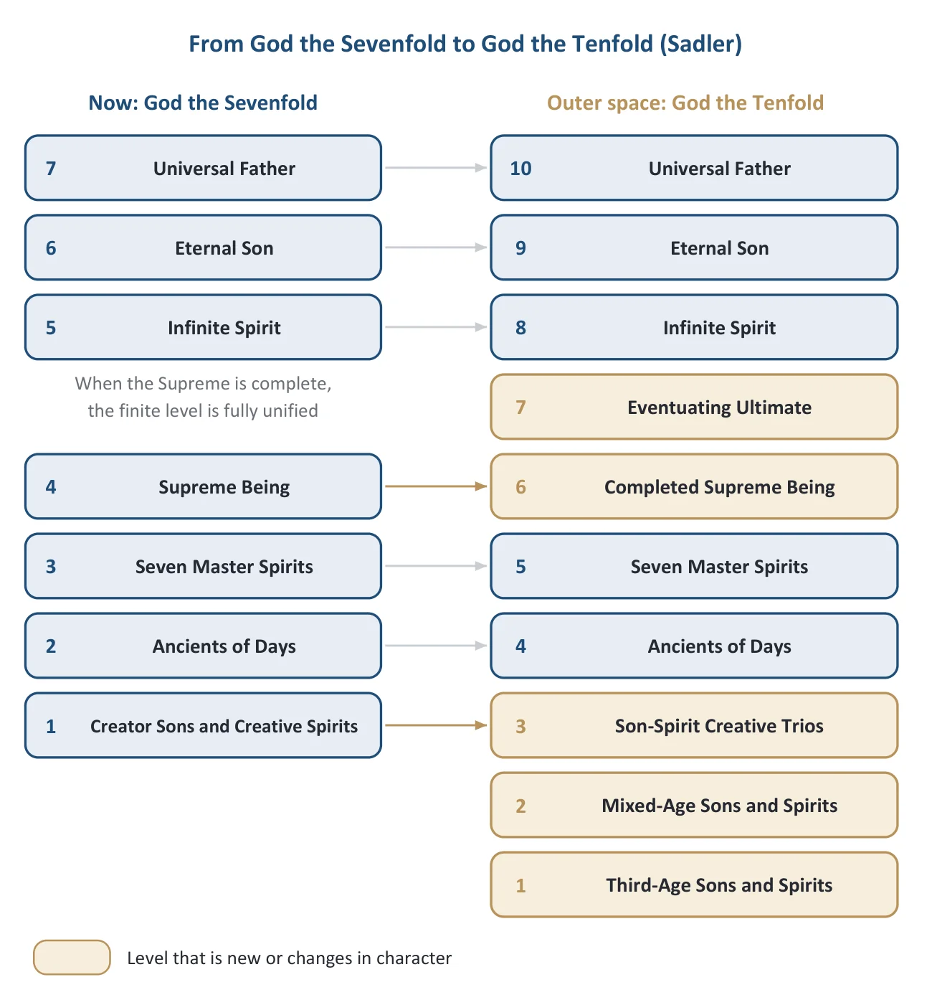

Original : Annexe XII, L’expansion de Dieu le Septuple (pp. 335–339)
Le Livre d’Urantia ne consacre qu’une seule phrase à la question : la fonction de Dieu le Septuple « va probablement s’étendre » à mesure que l’espace extérieur évoluera. Sadler s’empare de cette phrase et pose trois questions. Dieu le Septuple a-t-il aussi un aspect mental ? Comment le travail des Créateurs Suprêmes s’élargira-t-il dans l’espace extérieur ? Les sept niveaux pourraient-ils devenir dix ? Puisque presque tout dans cette annexe relève du raisonnement propre de Sadler, il faut la lire en regard des passages sur lesquels ce raisonnement s’appuie.
La fonction de Dieu le Septuple date de l’organisation des sept superunivers et va probablement s’étendre avec l’évolution future des créations de l’espace extérieur.0:8.12
Le même paragraphe ajoute que les futurs univers des niveaux primaire à quaternaire de l’espace extérieur verront l’inauguration d’une approche transcendante et absonite de la Déité. Sadler lit le mot « s’étendre » (expand) en deux sens. Le premier est une expansion en quantité : Dieu le Septuple porte son œuvre au-delà du grand univers, dans l’espace extérieur. Le second est une expansion en qualité. Si les sept niveaux actuels forment une échelle adaptée aux créatures finies, une approche absonite n’exigerait-elle pas des échelons supplémentaires ? Le texte n’implique clairement que le premier sens ; le second est une question que Sadler ouvre lui-même.
Le Livre d’Urantia ne présente pas Dieu le Septuple seulement comme une échelle de ministère spirituel. Dans le fascicule 116, il montre aussi un ordre « septuple » de contrôleurs qui soutient la structure physique du grand univers.
Vous avez été instruits des relations de Dieu le Septuple avec l’Être Suprême, et vous devriez maintenant reconnaitre que le Septuple englobe les contrôleurs aussi bien que les créateurs du grand univers.116:5.1
| Niveau | Ministère spirituel | Contrôle physique |
|---|---|---|
| 1 | Fils Créateurs et Esprits Créatifs | Maitres Contrôleurs Physiques |
| 2 | Anciens des Jours | Centres de Pouvoir Suprême |
| 3 | Sept Maitres Esprits | Directeurs de Pouvoir Suprême |
| 4 | Être Suprême | Tout-Puissant Suprême |
| 5 | Esprit Infini | Dieu d’Action (l’Esprit Infini) |
| 6 | Fils Éternel | Ile du Paradis |
| 7 | Père Universel | Source du Paradis (le Père Universel) |
Selon Sadler, les deux séries se rejoignent en trois points. Existentiellement, elles sont déjà une dans le Père Universel et l’Acteur Conjoint. Expérientiellement, elles deviennent une à mesure que le Tout-Puissant et le Suprême s’unissent par le Mental Suprême. Fonctionnellement, elles se rencontrent dans la coopération des Sept Maitres Esprits avec les Sept Directeurs de Pouvoir Suprême.
Le texte dit que l’homme trouve dans le Septuple sa « divinité personnelle et spirituelle », mais ajoute qu’il existe d’autres phases qui ne concernent pas la progression de la personnalité [106:1.4]. Si les contrôleurs septuples forment l’une de ces phases, ne pourrait-il pas exister aussi une série du mental ? Sadler tente de remplir sept places, en s’élevant des Maitres Contrôleurs Physiques (mental préadjuvat) par les esprits-mentaux adjuvats, les Esprits Créatifs, les Sept Maitres Esprits (mental cosmique), Majeston et l’Acteur Conjoint, jusqu’au Père-Fils. Il dit lui-même que cette série n’est pas essentielle à son argumentation ; il vaut donc mieux la prendre comme un arrangement provisoire qui correspond à la triple division de l’esprit, du mental et de la matière.
Il ne fait aucun doute que Dieu le Suprême, avec les trois Déités du Paradis, sera engagé dans l’espace extérieur. La question ouverte concerne les trois niveaux inférieurs de Dieu le Septuple, et le texte lui-même la laisse ouverte.
Ces organisateurs et pionniers des univers de l’espace-temps devront-ils être libérés pour des activités similaires dans l’espace extérieur ? Nous ne le savons pas, mais nous faisons beaucoup d’hypothèses sur ces matières et sur les affaires connexes.56:7.6
Le même paragraphe observe qu’à mesure que les créations s’ancrent, les trois premières manifestations de Dieu le Septuple se retirent. Sadler comprend que ceux qui se retirent de l’âge présent passent à l’âge suivant. Les Sept Maitres Esprits resteront dans le grand univers, mais, comme même les plans des « segments corrélatifs de l’espace extérieur » ont été conditionnés par leur diversité [16:0.11], leur influence s’y étendra aussi (voir l’annexe XIV). Les Anciens des Jours semblent devoir rester dans les superunivers comme vice-gérants du Suprême, prenant soin des habitants de l’espace extérieur qui traverseront les superunivers en route vers Havona [56:7.9]. Les créateurs les plus clairement destinés à l’espace extérieur sont les deux créateurs de l’univers local. Sadler s’attend à ce que trois sortes de Fils et d’Esprits y servent, et c’est le thème de l’annexe XIII.
Pour affirmer que les Anciens des Jours et les Maitres Esprits restent dans le grand univers, Sadler cite « 0:10.12 », mais ce paragraphe n’existe pas. Le contenu qu’il a en vue se trouve en 0:8.11. Ce paragraphe dit d’abord que les Fils Créateurs participent à la mobilisation suprême, puis ajoute que les Anciens des Jours et les Sept Maitres Esprits sont « probablement installés de manière éternelle comme administrateurs permanents dans le grand univers ».
S’appuyant sur le lien entre le nombre dix et l’Être Suprême, que traitera l’annexe XV, Sadler propose que Dieu le Septuple pourrait devenir « décuple » dans l’espace extérieur.

À la base de la série spirituelle se tiennent les Fils et Esprits du Troisième Âge, les Fils et Esprits d’Âge Mixte et les Trios Créatifs Fils-Esprit ; la sixième place revient à l’Être Suprême achevé et la septième à l’Ultime en cours d’extériorisation. La série physique reçoit les Maitres Organisateurs de Force Associés et les Maitres Organisateurs de Force Primaires, et « l’Ultime en tant qu’Omnipotent » y prend place aussi. Le tableau de Sadler pour la série physique laisse la sixième place sans nom ; d’après le déroulement de la liste, il s’agit très probablement du Tout-Puissant Suprême achevé.
Ce qui retient l’attention de Sadler, c’est le degré d’unification. À présent, l’Être Suprême et le Tout-Puissant Suprême ne sont pas encore pleinement joints, mais, dans une Déité décuple, le Suprême serait achevé et le niveau fini unifié. La place inachevée monterait simplement d’un étage : l’Ultime en tant qu’Omnipotent se trouverait alors par rapport à Dieu l’Ultime à peu près comme le Tout-Puissant Suprême se trouve maintenant par rapport à Dieu le Suprême.
Dans ce cas, Dieu l’Ultime commencerait à devenir manifeste aux univers du temps en tant que Tout-Puissant transcendantal (l’Omnipotent) exerçant le supercontrôle du supertemps et de l’espace transcendé relatifs aux fonctions administratives du Tout-Puissant Suprême.118:2.4
Il y a aussi des raisons de placer les organisateurs de force dans la série physique. Aux sièges des superunivers, les Maitres Contrôleurs Physiques sont dirigés par le Conseil d’Équilibre, dont les hauts commissaires sont envoyés par les Sept Maitres Esprits parmi les Maitres Organisateurs de Force Associés [29:4.2]. Même dans l’âge présent, les deux séries travaillent déjà main dans la main.